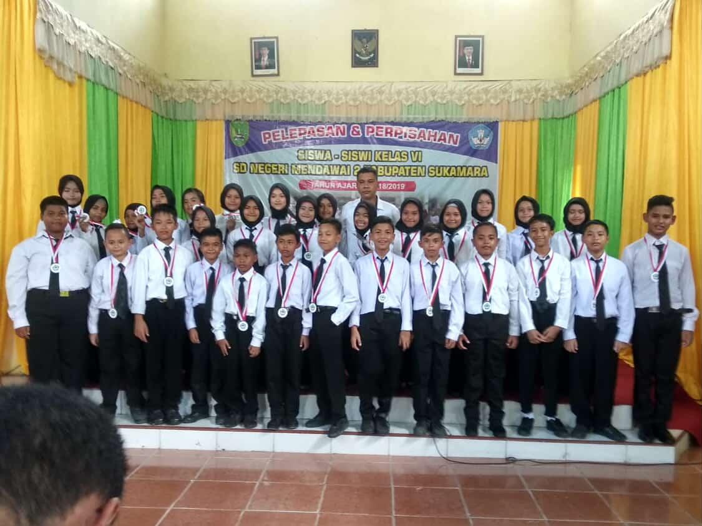

My education journey is a continuous process of learning, exploring, and growing. From school to university, each stage has shaped my knowledge, skills, and passion for technology and education

My educational journey began at SD Negeri Mendawai 2 Sukamara, where I built my early academic foundation and learned important values such as discipline, friendship, responsibility, and curiosity. This stage became the first step in shaping my learning habits and personal development before continuing to the next stages of education.
My journey at Pondok Pesantren Darul Hijrah became an important part of my personal, academic, and spiritual development. During my time there, I gained knowledge not only in religious studies and general academics, but also developed my Arabic and English language skills.
Beyond the classroom, I was actively introduced to organizational activities, leadership, teamwork, and public speaking, which helped me become more confident in expressing ideas and interacting with others.
Living and learning together with friends also taught me the importance of discipline, responsibility, independence, cooperation, and mutual support. These experiences shaped my character and became a valuable foundation for my journey in higher education.
My university journey began when I became a student of Computer Education at Universitas Lambung Mangkurat. Starting as a new student, I was introduced to a new learning environment that challenged me to become more independent, adaptable, and responsible. Throughout my first semesters, I explored various aspects of computer science and education, including programming, algorithms, databases, web development, and educational technology.
Now, as a third-semester student, I continue to develop both my technical and interpersonal skills through lectures, practical assignments, projects, and organizational experiences. Every semester has given me new challenges and opportunities to learn, collaborate, solve problems, and discover more about my interests in technology and education. This journey continues to shape my goals and prepare me for the next stages of my academic and professional development.